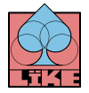

LÏKE is a framework similar to LÖVE or Raylib, but built for web canvas. It's a rock-solid foundation on which to build games and applications.

Focus on what matters.
No need to fuss with clunky web APIs. Get things on screen in an instant.
By using low-state abstractions, LÏKE is easier to reason about than vanilla.
LÏKE is a framework, not an engine. It's good for any realtime 2D canvas app, not just games.
You're free to use LÏKE for proprietary games, but the framework and all derivates stay open source. The code is kept as simple and clean as possible.
I'm digging in the dirt of Web APIs so you don't have to. LÏKE is your flower bed.
LÏKE's API will be _mostly_ stable. Thanks for being an early adopter.
Familiar binds for many, but modernized.
import { createLike } from "@like2d/like";
const like = createLike(document.body);
like.load = () => {
like.canvas.setMode([800, 600]);
like.input.setAction("jump", ["Space", "BBottom"]);
};
like.update = (dt) => {
if (like.input.justPressed("jump")) {
console.log("Jump!");
}
};
like.draw = () => {
like.gfx.clear([0.1, 0.1, 0.1, 1]);
like.gfx.circle("fill", "dodgerblue", [400, 300], 50);
like.gfx.print("white", "Hello Like2D!", [20, 20]);
};
await like.start();Wow, you knew about LÏKE before it was cool.